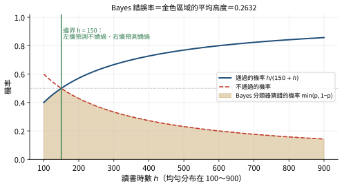
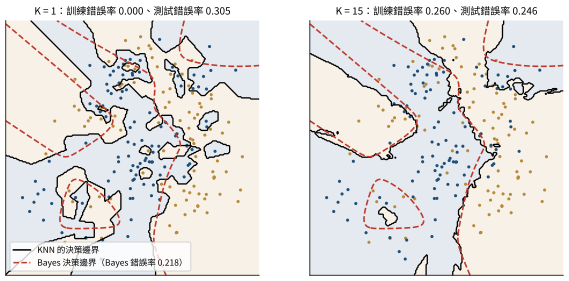
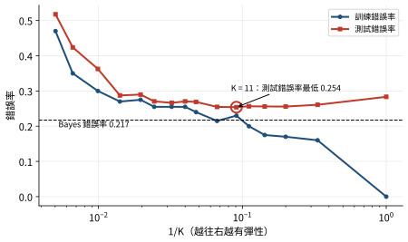
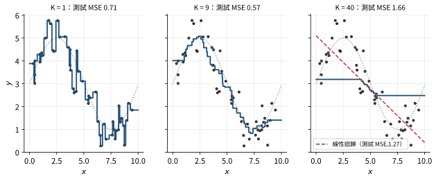
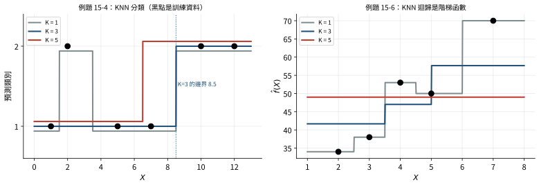
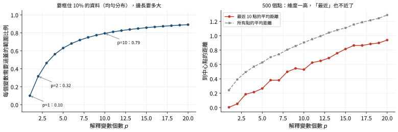

本章內容 15.1 分類的「最好」：Bayes 分類器 15.2 KNN 分類 15.3 KNN 迴歸 本章對應講義第 15 課，讀本是 ISLR 2.2.3 與 3.5 節。會用到第 1 章的偏差與變異數取捨、訓練誤差與測試誤差，以及第 8 章的維度詛咒。
記號。 類別 \(j=1,\ldots,c\)；\(\Pr(Y=j\mid X=x_0)\) 是在 \(x_0\) 屬於類別 \(j\) 的條件機率；\(\mathcal N_0\) 是離 \(x_0\) 最近的 \(K\) 個訓練點。
考點地圖：這一章在考試裡的位置
對應考綱 ：主題 2「線性模型」（占 40～50%）中的 KNN，以及主題 1「統計學習基礎」（5～10%）的偏差與變異數、分類錯誤率。
SOA 官方樣題裡的樣子 ：2024 樣題沒有 KNN 的題目。CAS MAS-II 的考題（本章習題 15.10 ～15.13 ）是很好的練習，計算都只要數距離、數票。
會考的東西
題目長什麼樣
判斷或計算的依據
Bayes 分類器
給條件機率，求決策邊界或分類結果
每個點分到條件機率最大的類別
Bayes 錯誤率
給各組比例與條件機率，求錯誤率
\(1-E\big[\max_j\Pr(Y=j\mid X)\big]\)
KNN 分類
給資料點，求某點的預測類別或某類的機率
找最近 K 個點，多數決；機率＝該類所占比例
KNN 迴歸
求某點的配適值、訓練或測試 MSE
最近 K 個點的 \(y\) 平均
K 的效果
K 增加時彈性、訓練誤差、測試誤差怎麼變
K 小＝彈性高、偏差低、變異數高
和線性迴歸比較
何時 KNN 好、何時線性迴歸好
真實關係非線性且變數少時 KNN 好；變數多時線性好
讀完這一章要會 ：
說出 Bayes 分類器的規則，求決策邊界與 Bayes 錯誤率。
用 KNN 做分類與迴歸，包括判斷一維資料上預測值改變的位置。
說出 K 對彈性、偏差、變異數、訓練與測試誤差的影響。
比較 KNN 與線性迴歸，說出維度詛咒對 KNN 的影響。
15.1 分類的「最好」：Bayes 分類器 一、分類的衡量標準：錯誤率
反應變數是類別時，沒辦法算 \((y-\hat y)^2\)。衡量方式是錯誤率 （error rate）：
\[\frac1n\sum_{i=1}^nI(y_i\ne\hat y_i),\]
\(I\) 是指標函數，預測錯就是 1。和迴歸一樣，要分清楚訓練錯誤率與測試錯誤率；我們真正在意的是測試錯誤率。
二、Bayes 分類器
如果知道每一點的條件機率 \(\Pr(Y=j\mid X=x_0)\)，最好的做法是：把 \(x_0\) 分到條件機率最大的類別 。這叫 Bayes 分類器 。兩類時就是「機率超過 0.5 的那一類」。
為什麼它最好：在 \(x_0\) 預測類別 \(j\)，猜對的機率就是 \(\Pr(Y=j\mid x_0)\)；選最大的那個，每一點猜對的機率都最大，平均起來錯誤率也最小。
推導：為什麼 Bayes 分類器的錯誤率最低
任何分類器都是一個規則 \(C(x)\)：看到 \(x\) 就預測類別 \(C(x)\)。
第一步：固定一點。 在 \(X=x_0\) 預測 \(C(x_0)=j\)，猜錯的機率是
\[\Pr\big(Y\ne j\mid X=x_0\big)=1-\Pr(Y=j\mid X=x_0).\]
要讓它最小，就要讓 \(\Pr(Y=j\mid X=x_0)\) 最大，也就是選條件機率最大的類別。
第二步：對 \(X\) 取平均。 整體的期望錯誤率是每一點錯誤率的平均（條件期望值的性質）：
\[\Pr\big(Y\ne C(X)\big)=E_X\Big[1-\Pr\big(Y=C(X)\mid X\big)\Big].\]
Bayes 分類器在每一個 \(x\) 都讓括號內最小，所以平均起來也最小，得到 (15.1)。沒有任何規則能在某些點做得比它好、又不在其他點變差。
為什麼它只是理論。 這個證明用到真正的 \(\Pr(Y=j\mid X)\)；實際上它未知，KNN、邏輯斯迴歸等方法都是在估計它。
Bayes 決策邊界 ：條件機率相等的地方（兩類時是 \(\Pr=0.5\) 的曲線），把空間切成各類的區域。
Bayes 錯誤率 ：每一點猜錯的機率是 \(1-\max_j\Pr(Y=j\mid X)\)，對 \(X\) 的分布取平均：
\[\text{Bayes 錯誤率}=1-E\Big[\max_j\Pr(Y=j\mid X)\Big].\tag{15.1}\]
這是任何分類器都無法低於的錯誤率，角色就像迴歸中的不可降低誤差。
例題 15-1：Bayes 錯誤率（習題 15.1）
依投保年數預測是否續保：
年數
保單數
續保機率
1
450
40%
2
240
60%
3
200
70%
4 以上
110
75%
規則 ：1 年預測「不續保」（0.6 > 0.4），2 年以上預測「續保」。
錯誤率 ：每組猜錯的機率是較小的那個，按比例加權：
\[0.45(0.40)+0.24(0.40)+0.20(0.30)+0.11(0.25)=0.3635 .\]
例題 15-2：決策邊界（講義例 15A、習題 15.4）
\(\Pr(Y=1\mid x_1,x_2)=\frac{|x_1|}{|x_1|+|x_2|}\)。邊界是 \(\Pr=0.5\)：\(|x_1|=0.5|x_1|+0.5|x_2|\)，即 \(|x_1|=|x_2|\)。兩條對角線把平面切成四塊，\(|x_1|>|x_2|\) 的左右兩塊預測 1，上下兩塊預測 2。
同樣地，\(\Pr(\text{I})=\frac{X_1^2}{X_1^2+4X_2^2}=0.5\) 給出 \(X_1^2=4X_2^2\)，邊界是 \(X_2=\pm0.5X_1\)。
例題 15-3：連續的 \(X\)（習題 15.3）
通過的機率 \(\frac{h}{150+h}\)，\(h\) 是讀書時數，均勻分布在 100～900。
邊界 ：\(\frac{h}{150+h}=0.5\)，\(h=150\)。\(h<150\) 預測不通過，猜錯的機率是 \(\frac{h}{150+h}\)；\(h>150\) 預測通過，猜錯的機率是 \(\frac{150}{150+h}\)。
錯誤率 ：
\[\frac{1}{800}\left[\int_{100}^{150}\Big(1-\frac{150}{150+h}\Big)dh+\int_{150}^{900}\frac{150}{150+h}dh\right]=\frac{1}{800}\Big[50-150\ln\tfrac{300}{250}+150\ln\tfrac{1050}{300}\Big]=0.2632 .\]

例題 15-3。藍線是通過的機率、紅虛線是不通過的機率，兩者在 \(h=150\) 相交：左邊預測不通過，右邊預測通過。每一點猜錯的機率是兩條線中較低的那一條（金色）；\(h\) 均勻分布，所以 Bayes 錯誤率就是金色區域的面積除以區間長度 800，等於 0.2632。
易錯提醒
三類以上時，Bayes 分類器選的是最大 的機率，不一定超過 0.5。例如三類機率 0.32、0.37、0.31，選 0.37 那一類，錯誤率 0.63（習題 15.2 ）。
「其他」類別的機率要自己用 1 減出來（習題 15.2 的「輸」、15.5 的 Mae）。
考試怎麼考：Bayes 分類器
給各組的條件機率，寫出分類規則（每組選機率最大的類別）並算 Bayes 錯誤率：每組猜錯的機率是 \(1-\max_j\)，再按各組比例加權（例題 15-1）。
求決策邊界：令兩類的條件機率相等（例題 15-2）。
\(X\) 連續時，錯誤率是 \(1-\max_j\Pr\) 對 \(X\) 的分布積分（例題 15-3）。
這一節的精選習題
You are predicting whether a policyholder will renew his policy based on how many years the policyholder has had the policy with the company. Based on your experience, the probability of renewal is:
Number of Years Policy with Company
Number of Policies
Probability of Renewal
1
450
40%
2
240
60%
3
200
70%
4 or more
110
75%
Calculate the Bayes error rate of the renewal prediction based on number of years the policyholder had the policy with the company.
隱藏解答 中文題意
依保戶與公司往來的年數預測是否續保。根據經驗：
求依年數預測續保的 Bayes 錯誤率。
（數據、圖表與選項見上方英文題目。）
解析
1 年的預測不續保（0.6 > 0.4），2 年以上預測續保。每組的錯誤機率是較小的機率：
\[0.45(0.40)+0.24(0.40)+0.20(0.30)+0.11(0.25)=0.3635 .\]
Joe is a chess player. The probability that a player wins or draws a chess game against Joe, given the class of that player, is as follows:
Class of Player
Proportion of Players in this Class
Probability of Win Against Joe
Probability of Draw Against Joe
Master
0.01
0.99
0.01
Expert
0.05
0.90
0.05
Class A
0.10
0.79
0.12
Class B
0.20
0.50
0.30
Class C
0.30
0.32
0.37
Class D
0.20
0.15
0.36
Class E
0.14
0.03
0.13
If a player does not win or draw against Joe, then the player loses.
Calculate the Bayes error rate of the predicted outcome of the game based on the player's class.
隱藏解答 中文題意
Joe 是西洋棋手。對手依等級贏或和 Joe 的機率：
沒有贏也沒有和就是輸。求依對手等級預測對局結果的 Bayes 錯誤率。
（數據、圖表與選項見上方英文題目。）
解析
先補上輸的機率，再選每組最大的：
大師、專家、A、B：贏最大（0.99、0.90、0.79、0.50），錯誤 0.01、0.10、0.21、0.50。
C：贏 0.32、和 0.37、輸 0.31，選和，錯誤 0.63。
D：贏 0.15、和 0.36、輸 0.49，選輸，錯誤 0.51。
E：輸 0.84，錯誤 0.16。
\[0.01(0.01)+0.05(0.10)+0.10(0.21)+0.20(0.50)+0.30(0.63)+0.20(0.51)+0.14(0.16)=0.4395 .\]
The probability of passing Exam SRM is modeled as a function of the number of hours of study, \(h\). The probability of passing is \(h/(150+h)\). The Bayes classifier is used to predict whether a person passes.
The number of hours that people study is uniformly distributed between 100 and 900.
Calculate the Bayes error rate.
隱藏解答 中文題意
通過 SRM 的機率是讀書時數 \(h\) 的函數 \(h/(150+h)\)，用 Bayes 分類器預測是否通過。讀書時數均勻分布在 100 到 900 之間。求 Bayes 錯誤率。
解析
邊界 \(h=150\)（機率 0.5）。\(h<150\) 預測不通過，錯誤機率 \(\frac{h}{150+h}=1-\frac{150}{150+h}\)；\(h>150\) 預測通過，錯誤機率 \(\frac{150}{150+h}\)。密度 \(1/800\)：
\[\frac{1}{800}\left[\Big(50-150\ln\frac{300}{250}\Big)+150\ln\frac{1050}{300}\right]=\frac{1}{800}\big[50-27.348+187.915\big]=0.2632 .\]
觀念題（7 題，仿 SOA 樣題的觀念判斷與小計算，含跨章節）
At a point \(x_0\), the true conditional probabilities of three classes are \(\Pr(Y=1\mid x_0)=0.35\), \(\Pr(Y=2\mid x_0)=0.40\), and \(\Pr(Y=3\mid x_0)=0.25\).
Determine the Bayes classifier's prediction at \(x_0\), and the probability that it is wrong.
(A) Class 1; 0.65
(B) Class 2; 0.60
(C) Class 2; 0.40
(D) No class, because no probability exceeds 0.5
(E) Class 3; 0.75
隱藏解答 中文題意
在 \(x_0\)，三類的真實條件機率是 0.35、0.40、0.25。Bayes 分類器預測哪一類？猜錯的機率是多少？
解析
選機率最大的類別 2；猜錯的機率 \(1-0.40=0.60\)。
(D) 錯：三類以上時不需要超過 0.5，選最大的就好。(C) 把猜對的機率當成猜錯的。
In a population, 60% of individuals have \(\Pr(Y=1\mid X)=0.7\) and 40% have \(\Pr(Y=1\mid X)=0.2\). \(Y\) takes the values 0 and 1.
Calculate the Bayes error rate.
(A) 0.26
(B) 0.50
(C) 0.74
(D) 0.30
(E) 0.20
隱藏解答 中文題意
母體中 60% 的人 \(\Pr(Y=1\mid X)=0.7\)，40% 的人 \(\Pr(Y=1\mid X)=0.2\)。求 Bayes 錯誤率。
解析
第一組預測 1，錯誤 0.3；第二組預測 0，錯誤 0.2。\(0.6(0.3)+0.4(0.2)=0.26\)。
(B) 是兩組都預測 1（\(0.18+0.32\)）；(C) 是兩組都選了機率較小的類別；(D)、(E) 只是單一組的錯誤機率。
For a two-class problem with one predictor \(x>0\), \(\Pr(Y=1\mid x)=\dfrac{x}{x+2}\).
Determine the Bayes decision boundary.
(A) \(x=1\)
(B) \(x=0.5\)
(C) \(x=2\)
(D) \(x=4\)
(E) There is no boundary; class 1 is always predicted
隱藏解答 中文題意
兩類問題，\(x>0\)，\(\Pr(Y=1\mid x)=\frac{x}{x+2}\)。求 Bayes 決策邊界。
解析
\(\frac{x}{x+2}=0.5\Rightarrow x=2\)。\(x>2\) 預測類別 1，\(x<2\) 預測另一類。
Determine which of the following statements about the Bayes classifier is/are true.
I. No classifier can have a lower expected test error rate than the Bayes classifier.
II. The Bayes error rate is 0 when every conditional probability equals 0 or 1.
III. In practice the Bayes classifier cannot be computed because the true conditional probabilities are unknown.
(A) I and II only
(B) I and III only
(C) II and III only
(D) I, II, and III
(E) The correct answer is not given by (A), (B), (C), or (D).
隱藏解答 中文題意
關於 Bayes 分類器，下列哪些正確？
I. 沒有分類器的期望測試錯誤率能比它低。
II. 每個條件機率都是 0 或 1 時，Bayes 錯誤率是 0。
III. 實務上無法計算 Bayes 分類器，因為真正的條件機率未知。
解析
I 對：每一點都選猜對機率最大的類別。II 對：\(1-E[\max]=1-1=0\)。III 對：這就是要用 KNN 等方法估計的原因。
\(X\) is uniformly distributed on \([0,1]\), and \(\Pr(Y=1\mid X=x)=x\) for a two-class response.
Calculate the Bayes error rate.
(A) 0.50
(B) 0.125
(C) 0.333
(D) 0.167
(E) 0.25
隱藏解答 中文題意
\(X\) 在 \([0,1]\) 均勻分布，\(\Pr(Y=1\mid X=x)=x\)。求 Bayes 錯誤率。
解析
每一點的錯誤機率是 \(\min(x,1-x)\)。\(\int_0^1\min(x,1-x)dx=2\int_0^{0.5}x\,dx=0.25\)。
(A) 是隨便猜；(B) 只算了一半區間。
A classifier is applied to 8 test observations. It predicts the correct class for 6 of them.
Calculate the test error rate.
(A) 0.75
(B) 0.25
(C) 0.33
(D) 0.20
(E) 2.00
隱藏解答 中文題意
分類器套用在 8 筆測試資料上，猜對 6 筆。求測試錯誤率。
解析
\(\frac{1}{8}\sum I(y_i\ne\hat y_i)=\frac28=0.25\)。(A) 是正確率；(C) 是錯誤數除以正確數。
In a two-class problem, the true conditional probability \(\Pr(Y=1\mid x)\) at four test points is 0.9, 0.3, 0.6, and 0.2.
Calculate the expected error rate of the Bayes classifier at these four points (averaged).
(A) 0.25
(B) 0.50
(C) 0.75
(D) 0.15
(E) 0.40
隱藏解答 中文題意
二類問題，四個測試點的真實 \(\Pr(Y=1\mid x)\) 是 0.9、0.3、0.6、0.2。求 Bayes 分類器在這四點的平均期望錯誤率。
解析
Bayes 選機率大的類別，錯誤率是較小的那個機率：0.1、0.3、0.4、0.2，平均 0.25。(C) 是 \(1-0.25\)。
15.2 KNN 分類 一、做法
Bayes 分類器需要真正的條件機率，實際上不知道。KNN 分類器 用資料估計它：
選一個正整數 \(K\)。
找出離 \(x_0\) 最近的 \(K\) 個訓練點 \(\mathcal N_0\)。
估計 \(\Pr(Y=j\mid x_0)=\frac1K\sum_{i\in\mathcal N_0}I(y_i=j)\)，也就是那 \(K\) 個點中類別 \(j\) 所占的比例。
用 Bayes 規則：預測比例最大的類別（多數決）。
距離通常用歐氏距離。
例題 15-4：一維的 KNN（講義例 15B）
資料 \((X,Y)\)：(1, 1)、(2, 2)、(5, 1)、(7, 1)、(10, 2)、(12, 2)。\(K=3\)。
\(X\) 小的時候最近三點是 1、2、5（1、2、1）→ 預測 1。\(X\) 越過 \(\frac{1+7}{2}=4\) 後換成 2、5、7 → 仍是 1。越過 \(\frac{2+10}{2}=6\) 後換成 5、7、10 → 1。越過 \(\frac{5+12}{2}=8.5\) 後換成 7、10、12 → 預測 2。
規則：\(X<8.5\) 預測 1，\(X>8.5\) 預測 2。訓練錯誤率：只有 \(X=2\) 猜錯，\(1/6\)。
（\(K=1\) 時每個點都猜對，訓練錯誤率 0；\(K=5\) 時規則變成 \(X<6.5\) 預測 1，訓練錯誤率 \(1/3\)。）
直覺：一維時怎麼找「最近的 K 個點」換人的位置
最近 \(K\) 個點總是一段連續的區間。往右移動時，最左邊那個點被「區間右邊下一個點」取代，交換發生在兩者的中點。所以只要依序檢查中點，就能把整條數線切成幾段，每段的預測固定。
二、K 怎麼控制彈性
\(K=1\) ：每一點跟著最近的那個點走，決策邊界彎來彎去，訓練錯誤率 0。偏差低、變異數高 ，容易過度配適。\(K\) 大 ：平均很多點，邊界平滑。偏差高、變異數低 。\(K=n\) 時所有點都預測成多數類別。
訓練錯誤率隨 \(K\) 增加而上升；測試錯誤率呈 U 形，在中間的 \(K\) 最低。常把錯誤率畫成 \(1/K\) 的函數：越往右（\(1/K\) 越大）越有彈性，就和第 1 章 的圖方向一致。

200 個模擬訓練點（兩類），紅色虛線是 Bayes 決策邊界（Bayes 錯誤率 0.218）。\(K=1\) 的邊界（黑）把每一個點都圍起來，訓練錯誤率 0，但 5000 筆測試資料的錯誤率 0.305；\(K=15\) 的邊界平滑得多，接近 Bayes 邊界，訓練錯誤率 0.260、測試錯誤率 0.246。 
同一個模擬，訓練與測試錯誤率對 \(1/K\)（對數刻度）。訓練錯誤率隨彈性增加一路降到 0；測試錯誤率先降後升，在 \(K=11\) 附近最低（0.254），但永遠高於 Bayes 錯誤率 0.217。最左邊 \(K=199\) 時幾乎所有點都預測成同一類，錯誤率接近 0.5。
例題 15-5：二維 KNN（習題 15.7）
資料：(1,2) A、(1,6) A、(2,2) A、(3,4) B、(4,1) A、(4,5) B、(5,3) B。\(K=3\)，預測 (3,3)。
距離平方：5、13、2、1、5、5、4。最近三點是 (3,4) B（1）、(2,2) A（2）、(5,3) B（4），多數是 B。
考試怎麼考：KNN 分類
算距離、數票 ：多維時用距離平方比大小就好，不必開根號（MAS-II-F18:36、MAS-II Sample:11）。機率估計 ：\(\Pr(Y=j\mid x_0)\) 是最近 \(K\) 個點中類別 \(j\) 的比例，例如 5 個中有 3 個 Yes 就是 0.6。K 的效果 ：K 增加 → 彈性下降、訓練錯誤率上升、測試錯誤率先降後升。\(K\) 接近訓練集大小時所有點都預測成同一類（MAS-II-F18:37）。和 Bayes 錯誤率比較 （MAS-II-S19:38）：Bayes 錯誤率是用真正的條件機率算的，與資料的實際類別無關。
這一節的精選習題
There are two real-valued predictor variables, \(X_1\) and \(X_2\), and a classification response variable \(Y\) with two classes, A and B. You are given the following data:
\(X_1\)
1
1
2
3
4
4
5
\(X_2\)
2
6
2
4
1
5
3
\(Y\)
A
A
A
B
A
B
B
KNN with \(K=3\) is used.
Determine the value of \(Y\) assigned to (3,3).
隱藏解答 中文題意
兩個實數解釋變數 \(X_1\)、\(X_2\)，類別反應 \(Y\) 有 A、B 兩類：(1,2) A、(1,6) A、(2,2) A、(3,4) B、(4,1) A、(4,5) B、(5,3) B。用 \(K=3\) 的 KNN，求 (3,3) 的預測類別。
解析
到 (3,3) 的距離平方：5、13、2、1、5、5、4。最近三點：(3,4) B（1）、(2,2) A（2）、(5,3) B（4）。兩個 B，預測 B。
A classification variable \(Y\) with classes 0 and 1 is modeled using predictor variable \(X\). You are given the following observations:
\(X\)
1
2
4
7
11
12
15
\(Y\)
0
0
1
0
1
0
1
Using KNN with \(K=3\), determine the regions for which 0 is predicted for \(Y\).
隱藏解答 中文題意
類別變數 \(Y\)（0、1）以 \(X\) 預測。觀察值：
用 \(K=3\) 的 KNN，求預測 \(Y=0\) 的區域。
（數據、圖表與選項見上方英文題目。）
解析
依序找「最近三點」換人的中點：
\(X<4\)：1、2、4（0、0、1）→ 0。
在 \(\frac{1+7}{2}=4\) 換成 2、4、7（0、1、0）→ 0。
在 \(\frac{2+11}{2}=6.5\) 換成 4、7、11（1、0、1）→ 1。
在 \(\frac{4+12}{2}=8\) 換成 7、11、12（0、1、0）→ 0。
在 \(\frac{7+15}{2}=11\) 換成 11、12、15（1、0、1）→ 1。
所以 \(X<6.5\) 與 \(8<X<11\) 預測 0。
[MAS-II-F18:36] A training data set contains eight observations for two predictor variables, \(X_1\) and \(X_2\), and a response variable, \(Y\). The response \(Y\) has three possible classes: P, N, and U.
\(i\)
\(X_1\)
\(X_2\)
\(Y\)
Distance from \((x_{i1},x_{i2})\) to (3,2)
1
4.1
3.0
P
1.5
2
−2.6
−3.0
N
7.5
3
−1.1
1.3
U
4.2
4
0.0
1.2
U
3.1
5
−3.0
−5.0
N
9.2
6
2.0
2.0
U
1.0
7
−3.1
−2.0
N
7.3
8
3.2
3.1
P
1.1
Three models are constructed using K-Nearest Neighbors and the data set above to predict \(Y\) for the two-dimensional space of predictors \(X_1\) and \(X_2\).
Model I: K-Nearest Neighbors with \(K=1\).
Model II: K-Nearest Neighbors with \(K=3\).
Model III: K-Nearest Neighbors with \(K=7\).
Each model is used to classify the point (3,2).
Determine the predicted response \(Y\) at this point using each of the three models.
(A) Model I: Y = P, Model II: Y = P, Model III: Y = P
(B) Model I: Y = P, Model II: Y = P, Model III: Y = U
(C) Model I: Y = U, Model II: Y = P, Model III: Y = P
(D) Model I: Y = U, Model II: Y = P, Model III: Y = U
(E) The answer is not given by (A), (B), (C), or (D)
隱藏解答 中文題意
（2018 秋季 MAS-II 第 36 題）訓練資料有 8 筆，兩個解釋變數 \(X_1\)、\(X_2\)，反應 \(Y\) 有 P、N、U 三類：
模型 I、II、III 分別是 \(K=1\)、3、7 的 KNN。求每個模型對 (3,2) 的預測。
(A) I：P，II：P，III：P
(B) I：P，II：P，III：U
(C) I：U，II：P，III：P
(D) I：U，II：P，III：U
(E) 以上皆非
（數據、圖表與選項見上方英文題目。）
解析
距離由小到大：6（1.0，U）、8（1.1，P）、1（1.5，P）、4（3.1，U）、3（4.2，U）、7（7.3，N）、2（7.5，N）、5（9.2，N）。
\(K=1\)：U。
\(K=3\)：U、P、P → P。
\(K=7\)：除了 5 以外全部：U 三個、P 兩個、N 兩個 → U。
[MAS-II-S19:38] You are provided with training and test data samples consisting of a single variable \(X\), and an observation \(Y\) consisting of two possible classes, T and F.
Training data:
\(x_i\)
−1.60
−1.50
−0.60
−0.30
0.40
0.40
0.70
1.20
1.30
2.10
\(y_i\)
T
F
T
T
F
F
T
T
T
F
Test data:
\(x_i\)
−1.3
0.9
1.2
\(y_i\)
F
F
T
The Bayes classifier \(\Pr(Y=F\mid X=x)=e^{-x^2}\).
Calculate the amount by which K-nearest neighbors test error rate with \(K=3\) exceeds the Bayes error rate on the test data.
(A) Less than 0.35
(B) At least 0.35 but less than 0.40
(C) At least 0.40 but less than 0.45
(D) At least 0.45 but less than 0.50
(E) Greater than or equal to 0.50
隱藏解答 中文題意
（2019 春季 MAS-II 第 38 題）一個變數 \(X\)，類別 \(Y\) 為 T 或 F。訓練資料：
測試資料：(−1.3, F)、(0.9, F)、(1.2, T)。真正的條件機率 \(\Pr(Y=F\mid X=x)=e^{-x^2}\)。求 \(K=3\) 的 KNN 測試錯誤率比 Bayes 錯誤率高多少。
(B) 至少 0.35，小於 0.40
(C) 至少 0.40，小於 0.45
(D) 至少 0.45，小於 0.50
(E) 至少 0.50
（數據、圖表與選項見上方英文題目。）
解析
Bayes 錯誤率 ：邊界 \(e^{-x^2}=0.5\)，\(|x|=\sqrt{\ln2}=0.8326\)。三個測試點的 \(|x|\) 都大於它，Bayes 都預測 T，錯誤機率是 \(\Pr(F)=e^{-x^2}\)：\(e^{-1.69}=0.1845\)、\(e^{-0.81}=0.4449\)、\(e^{-1.44}=0.2369\)，平均 0.2888。（它和測試點實際的 \(y\) 無關。）
KNN（\(K=3\)） ：
- −1.3：最近 −1.60 T、−1.50 F、−0.60 T → T，實際 F，錯。
- 0.9：最近 0.70 T、1.20 T、1.30 T → T，實際 F，錯。
- 1.2：同樣三點 → T，實際 T，對。
錯誤率 \(2/3\)。差 \(0.6667-0.2888=0.3779\)。
觀念題（9 題，仿 SOA 樣題的觀念判斷與小計算，含跨章節）
A two-class response is observed at \(X\) = 1 (A), 3 (B), 4 (B), 8 (A), 9 (A).
Using KNN with \(K=3\), determine the predicted class at \(X=5\).
(A) B
(B) A
(C) A and B tie
(D) No prediction is possible
(E) B, but only if \(K\) is changed to 5
隱藏解答 中文題意
二類反應在 \(X\)＝1（A）、3（B）、4（B）、8（A）、9（A）。用 \(K=3\) 的 KNN 預測 \(X=5\)。
解析
距離：4、2、1、3、4。最近三點是 4（B）、3（B）、8（A），多數是 B。
(E) 錯：\(K=5\) 時用全部資料，A 有三個，會預測 A。
Using KNN with \(K=4\), the four nearest training observations to \(x_0\) have responses Yes, Yes, No, Yes.
Calculate the KNN estimate of \(\Pr(Y=\text{Yes}\mid x_0)\).
(A) 0.25
(B) 0.50
(C) 0.75
(D) 1.00
(E) 0.60
隱藏解答 中文題意
\(K=4\) 的 KNN，離 \(x_0\) 最近的四筆訓練資料反應是 Yes、Yes、No、Yes。求 \(\Pr(Y=\text{Yes}\mid x_0)\) 的估計值。
解析
四個中有三個 Yes，\(3/4=0.75\)。KNN 用比例估計條件機率，再用多數決分類。
Determine which of the following statements about KNN classification is/are true.
I. With \(K=1\), the training error rate is 0 (when all training points are distinct).
II. Increasing \(K\) increases the bias of the classifier.
III. Increasing \(K\) increases the variance of the classifier.
(A) III only
(B) I and II only
(C) I and III only
(D) II and III only
(E) The correct answer is not given by (A), (B), (C), or (D).
隱藏解答 中文題意
關於 KNN 分類，下列哪些正確？
I. \(K=1\) 時訓練錯誤率是 0（訓練點互不相同時）。
II. \(K\) 增加時偏差增加。
III. \(K\) 增加時變異數增加。
解析
I 對：每個訓練點最近的就是自己。II 對。III 錯：\(K\) 增加時平均更多點，變異數下降。
A KNN classifier is trained on \(n\) observations, and \(K\) is set equal to \(n\).
Determine the resulting classifier.
(A) It reproduces the training data exactly
(B) It equals the Bayes classifier
(C) It has training error rate 0
(D) It cannot be computed
(E) It predicts the majority class of the training data everywhere
隱藏解答 中文題意
KNN 分類器用 \(n\) 筆資料訓練，\(K=n\)。結果是什麼？
解析
每一點的「最近 \(n\) 點」都是全部訓練資料，預測都是整體的多數類別。這是最沒有彈性的情況。
Training data in two dimensions: (1,1) A, (2,0) B, (0,−1) B, (−2,2) A, (3,3) A.
Using KNN with \(K=3\), determine the predicted class at (0,0).
(A) A
(B) B
(C) A and B tie
(D) A, because A is the majority overall
(E) B, because the nearest point is B and \(K\) does not matter
隱藏解答 中文題意
二維訓練資料：(1,1) A、(2,0) B、(0,−1) B、(−2,2) A、(3,3) A。用 \(K=3\) 的 KNN 預測 (0,0)。
解析
距離平方：2、4、1、8、18。最近三點：(0,−1) B、(1,1) A、(2,0) B，兩個 B。
(D) 是 \(K=5\) 的答案。
A KNN classifier with \(K=1\) has training error rate 0 and test error rate 0.35, while \(K=15\) gives training error rate 0.22 and test error rate 0.25.
Determine the best description of the \(K=1\) classifier.
(A) It underfits the data
(B) It has high bias and low variance
(C) It is equivalent to the Bayes classifier
(D) It overfits the data
(E) Its test error rate equals the Bayes error rate
隱藏解答 中文題意
\(K=1\) 的 KNN 訓練錯誤率 0、測試錯誤率 0.35；\(K=15\) 訓練 0.22、測試 0.25。\(K=1\) 的分類器最適合的描述是？
解析
訓練完美、測試卻比較差，是過度配適：偏差低、變異數高。(B) 方向相反。
Training and test error rates of KNN are often plotted against \(1/K\).
Determine the effect of moving to the right along this axis (larger \(1/K\)).
(A) The classifier becomes more flexible
(B) The classifier becomes less flexible
(C) The training error rate increases
(D) The bias increases
(E) The variance decreases
隱藏解答 中文題意
KNN 的訓練與測試錯誤率常畫成 \(1/K\) 的函數。沿著橫軸往右（\(1/K\) 變大）代表什麼？
解析
\(1/K\) 大就是 \(K\) 小，彈性高：偏差下降、變異數上升、訓練錯誤率下降。
Determine why the test error rate of a KNN classifier, even at its best value of \(K\), is generally above the Bayes error rate.
(A) KNN uses estimated, not true, conditional probabilities
(B) KNN always overfits
(C) The Bayes error rate is computed on training data
(D) KNN cannot handle more than two classes
(E) The Bayes classifier uses a larger value of \(K\)
隱藏解答 中文題意
為什麼 KNN 即使在最好的 \(K\)，測試錯誤率通常仍高於 Bayes 錯誤率？
解析
Bayes 分類器用真正的條件機率；KNN 用有限資料估計它，估計有誤差，所以只能接近、不能低於 Bayes 錯誤率。
A one-dimensional training set has \(x\) = 1, 2, 5, 6, 9 with classes A, A, B, B, A. KNN with \(K=3\) is used.
Determine the predicted class at \(x_0=4\).
(A) A
(B) B
(C) A and B tie
(D) No prediction is possible
(E) It depends on the order of the data
隱藏解答 中文題意
一維訓練資料 \(x\)＝1、2、5、6、9，類別 A、A、B、B、A。用 \(K=3\) 的 KNN，求 \(x_0=4\) 的預測。
解析
距離：1→3、2→2、5→1、6→2、9→5。最近三個是 5（B）、2（A）、6（B），多數為 B。
15.3 KNN 迴歸 一、做法
反應變數連續時，把多數決換成平均：
\[\hat f(x_0)=\frac1K\sum_{i\in\mathcal N_0}y_i .\]
KNN 是非參數 方法：不假設 \(f\) 的函數形式。一維時配適出來的是階梯函數。
例題 15-6：KNN 迴歸（講義例 15C、習題 15.14）
資料 \(X\)：2、3、4、5、7，\(Y\)：34、38、53、50、70。
\(K=1\)：每段取最近點的值，\(X<2.5\) 為 34、\(2.5\)～\(3.5\) 為 38、\(3.5\)～\(4.5\) 為 53、\(4.5\)～\(6\) 為 50、\(X>6\) 為 70。
\(K=3\)：\(X<3.5\) 用 2、3、4，平均 41.67；\(3.5\)～\(5\) 用 3、4、5，平均 47；\(X>5\) 用 4、5、7，平均 57.67。
\(K=5\)：永遠是全部平均 49。
另一組資料 \(X\)：5、8、15、22、30，\(Y\)：4、1、10、16、30，\(K=3\) 求 \(X=12\)：距離 7、4、3、10、18，最近三點是 15、8、5，平均 \((10+1+4)/3=5\)。

50 個點，真實函數是正弦曲線（灰色點線）。\(K=1\) 完全跟著資料跳動，測試 MSE 0.71；\(K=9\) 平滑地抓到形狀，測試 MSE 0.57；\(K=40\) 幾乎是一條水平線，在兩端尤其糟（邊界上最近的 40 個點都在同一側），測試 MSE 1.66，比直線（1.27）還差。 
左：例題 15-4 的一維 KNN 分類，三種 \(K\) 的預測（線條稍微錯開以免重疊）。\(K=1\) 時 \(X=2\) 附近自成一區；\(K=3\) 的邊界在 8.5；\(K=5\) 移到 6.5。右：例題 15-6 的 KNN 迴歸。\(K=1\) 經過每一個點，\(K=3\) 只有三個階梯，\(K=5\) 是一條水平線（全部平均 49）。 KNN 迴歸的偏差與變異數
推導：KNN 迴歸在一點的期望預測誤差
設 \(y=f(x)+\varepsilon\)，\(\mathrm{Var}(\varepsilon)=\sigma^2\)，訓練點的 \(x\) 固定。在 \(x_0\) 的預測 \(\hat f(x_0)=\frac1K\sum_{i\in\mathcal N_0}y_i\)。
期望值：\(E[\hat f(x_0)]=\frac1K\sum_{i\in\mathcal N_0}f(x_i)\)，是鄰居 的真實值平均，不是 \(f(x_0)\)。
變異數：\(K\) 個獨立誤差的平均，\(\mathrm{Var}(\hat f(x_0))=\sigma^2/K\)。
新的觀察 \(y_0=f(x_0)+\varepsilon_0\) 與訓練資料獨立，所以
\[E\big[(y_0-\hat f(x_0))^2\big]=\sigma^2+\Big[f(x_0)-\frac1K\sum_{i\in\mathcal N_0}f(x_i)\Big]^2+\frac{\sigma^2}K .\]
三項分別是不可降低的誤差、偏差平方、變異數。\(K\) 變大：變異數 \(\sigma^2/K\) 下降，但鄰居離 \(x_0\) 越來越遠，偏差上升。這就是 \(K\) 控制彈性的數學原因。
二、KNN 與線性迴歸
如果真實關係接近線性，線性迴歸較好 ：它用對了函數形式，變異數小。
如果真實關係非線性，而且解釋變數少 ，KNN 可能較好。
解釋變數多 時，KNN 會遇到維度詛咒 （第 8 章 ）：在高維空間裡，最近的 \(K\) 個點其實都很遠，「附近」的平均已經不代表 \(x_0\)。每個解釋變數只有少數觀察時，參數方法比較好。
線性迴歸容易解釋，KNN 沒有係數可以解讀。

維度詛咒。左：資料在單位立方體中均勻分布，要框住 10% 的資料，每個變數的邊長在 \(p=1\) 時只要 0.1，\(p=2\) 要 0.32，\(p=10\) 就要 0.79，幾乎是整個範圍。右：500 個點時，中心點最近 10 個鄰居的平均距離隨維度快速增加；\(p=20\) 時最近的鄰居幾乎和一般的點一樣遠，「附近的平均」已經不是附近。
例題 15-7：訓練 MSE 與測試 MSE（習題 15.15）
\(K=2\)。全部資料 \(X\)：4、7、12、14、15、21、22，\(Y\)：3、8、15、22、30、40、53。訓練集是 \(X=4,12,14,15,22\)。
用訓練集的點配適：
\(X\)
最近兩點
配適值
\(y\)
殘差
4
4、12
9
3
−6
12
12、14
18.5
15
−3.5
14
14、15
26
22
−4
15
14、15
26
30
4
22
15、22
41.5
53
11.5
7（測試）
4、12
9
8
−1
21（測試）
22、15
41.5
40
−1.5
訓練 MSE \(=\frac{36+12.25+16+16+132.25}{5}=42.5\)；測試 MSE \(=\frac{1+2.25}{2}=1.625\)。KNN 沒有估計參數，除以觀察數即可。（測試 MSE 比訓練 MSE 小只是因為測試點剛好落在平滑的地方，不是常態。）
考試怎麼考：KNN 迴歸
計算某點的配適值；計算訓練與測試 MSE（注意訓練點自己也算在最近的 \(K\) 個裡）。
概念：非參數、階梯函數；K 增加彈性下降；變數多時維度詛咒；線性迴歸較易解釋。
本章總整理
錯誤率 \(=\frac1n\sum I(y_i\ne\hat y_i)\)。
Bayes 分類器：分到條件機率最大的類別；邊界是機率相等處；Bayes 錯誤率 \(=1-E[\max_j\Pr(Y=j\mid X)]\)，是最低可能的錯誤率。
KNN 分類：最近 \(K\) 點的比例估計機率，多數決。KNN 迴歸：最近 \(K\) 點的平均。
\(K\) 小：彈性高、偏差低、變異數高、訓練誤差低；\(K\) 大反之。測試誤差在中間的 \(K\) 最低。
一維時，預測改變的位置在「被替換的點」與「新加入的點」的中點。
線性迴歸在真實關係接近線性或變數多時較好；KNN 在非線性、變數少時較好。
這一節的精選習題
A continuous variable \(Y\) is modeled as a function of \(X\) using KNN with \(K=2\). You are given the following data:
\(X\)
4
7
12
14
15
21
22
\(Y\)
3
8
15
22
30
40
53
Cross-validation is used to test the fit. The training set consists of the observations with \(X=4,12,14,15,22\).
Calculate the mean square error on the training data and on the test data.
隱藏解答 中文題意
連續變數 \(Y\) 以 \(K=2\) 的 KNN 對 \(X\) 建模。資料 \(X\)：4、7、12、14、15、21、22；\(Y\)：3、8、15、22、30、40、53。用交叉驗證檢驗配適，訓練集是 \(X=4,12,14,15,22\) 的觀察。求訓練資料與測試資料的均方誤差。
解析
只用訓練集的點配適（訓練點自己也算在最近的兩點中）：
\(X\)
最近兩點
配適值
\(y\)
\(y-\hat y\)
4
4、12
9
3
−6
12
12、14
18.5
15
−3.5
14
14、15
26
22
−4
15
14、15
26
30
4
22
22、15
41.5
53
11.5
7
4、12
9
8
−1
21
22、15
41.5
40
−1.5
訓練 MSE \(=\frac{36+12.25+16+16+132.25}{5}=42.5\)；測試 MSE \(=\frac{1+2.25}{2}=1.625\)。KNN 不估計參數，直接除以觀察數。
觀念題（9 題，仿 SOA 樣題的觀念判斷與小計算，含跨章節）
KNN regression with \(K=2\) is applied to the data \(X\): 1, 2, 4, 7, 10 and \(Y\): 5, 7, 6, 12, 20.
Calculate the fitted value at \(X=5\).
(A) 6.0
(B) 8.3
(C) 9.0
(D) 10.0
(E) 6.5
隱藏解答 中文題意
\(K=2\) 的 KNN 迴歸，資料 \(X\)：1、2、4、7、10，\(Y\)：5、7、6、12、20。求 \(X=5\) 的配適值。
解析
距離：4、3、1、2、5。最近兩點 4、7，\(Y\) 為 6、12，平均 9。
(E) 用了 2 與 4；(B) 用了 \(K=3\)（2、4、7）。
KNN regression is fitted with \(K\) equal to the number of training observations.
Determine the fitted function.
(A) A constant equal to the mean of all training responses
(B) The least squares line
(C) A step function with one step at each training point
(D) It interpolates the training data
(E) It equals 0 everywhere
隱藏解答 中文題意
KNN 迴歸的 \(K\) 等於訓練資料筆數，配適出來的函數是什麼？
解析
每一點都平均全部資料，所以是常數（全部 \(y\) 的平均），例如講義例 15C 的 \(K=5\) 永遠是 49。(D) 是 \(K=1\)。
Determine which statement describes why KNN regression is called a non-parametric method.
(A) It has no tuning parameter
(B) It does not assume a functional form for \(f\)
(C) It cannot produce predictions outside the range of \(X\)
(D) It requires the response to be normally distributed
(E) It estimates exactly one parameter per observation
隱藏解答 解析
非參數＝不假設 \(f\) 的函數形式（不像線性迴歸假設是直線）。它仍有調整參數 \(K\)，所以 (A) 錯。
Determine how the performance of KNN regression typically changes as the number of predictors increases while the sample size stays fixed.
(A) It improves, because more information is available
(B) It is unaffected, because distances still exist
(C) It becomes identical to linear regression
(D) It improves only when \(K=1\)
(E) It deteriorates, because the nearest neighbors become far away
隱藏解答 中文題意
樣本數固定、解釋變數增加時，KNN 迴歸的表現通常怎麼變？
解析
維度詛咒：高維空間中資料很稀疏，最近的 \(K\) 個點其實都很遠，用它們的平均預測 \(x_0\) 偏差很大（第 8 章 ）。
Determine the situation in which linear regression is expected to outperform KNN regression.
(A) The true relationship is highly nonlinear and there is one predictor
(B) There are very many observations and one predictor with a wiggly relationship
(C) The training MSE of KNN with \(K=1\) is 0
(D) The true relationship is close to linear
(E) The response is categorical
隱藏解答 中文題意
什麼情況下線性迴歸預期會比 KNN 迴歸好？
解析
函數形式猜對時，參數方法的變異數小、偏差也小。(A)、(B) 是 KNN 較有利的情況；(E) 是分類問題。
KNN regression with \(K=1\) is fitted to training data with distinct \(x\) values.
Calculate the training MSE.
(A) 0
(B) The variance of the responses
(C) The test MSE
(D) It depends on the data
(E) 1
隱藏解答 中文題意
訓練資料的 \(x\) 互不相同，用 \(K=1\) 的 KNN 迴歸配適。訓練 MSE 是多少？
解析
每個訓練點最近的就是自己，配適值等於觀察值，訓練 MSE 為 0。這不代表模型好，測試 MSE 通常較大。
Determine an advantage of linear regression over KNN regression that holds even when both have similar test MSE.
(A) Linear regression never has bias
(B) Linear regression is easier to interpret
(C) Linear regression requires no assumptions
(D) Linear regression always has lower training MSE
(E) Linear regression works better when the relationship is nonlinear
隱藏解答 中文題意
即使兩者的測試 MSE 差不多，線性迴歸仍比 KNN 迴歸好在哪裡？
解析
線性迴歸有係數可以解讀每個變數的效果；KNN 只給預測值。其他選項都不對。
KNN regression with \(K=3\) is used. The three nearest training responses to \(x_0\) are 10, 14, and 21.
Calculate the prediction at \(x_0\).
(A) 14
(B) 21
(C) 15
(D) 45
(E) 10
隱藏解答 中文題意
\(K=3\) 的 KNN 迴歸，離 \(x_0\) 最近三筆的反應是 10、14、21。求預測值。
解析
平均 \(45/3=15\)。(A) 是中位數。
For KNN regression, determine how the bias and variance of the fitted function change as \(K\) increases.
(A) Bias decreases, variance increases
(B) Both decrease
(C) Both increase
(D) Bias increases, variance decreases
(E) Neither changes
隱藏解答 中文題意
KNN 迴歸中 \(K\) 增加時，配適函數的偏差與變異數如何變化？
解析
\(K\) 越大平均越多點：越平滑（變異數小），但會平均到較遠、真實值不同的點（偏差大）。